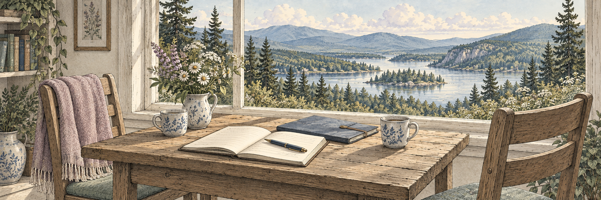

When a death is near or has happened
Understand the decisions, paperwork, timing, and questions that can make an already difficult moment feel more manageable.
Read practical guidance →A little guidance. A clearer path.
Thoughtful guidance for planning ahead, navigating loss,
and making the most of the life you have.

You don’t have to figure it all out today.

Latest article · Planning ahead
Planning is not about having every answer. It is about sharing what matters, choosing the people you trust, and taking one manageable next step.
Read the articleStart where you are
From end-of-life arrangements and family conversations to simplifying your space and pursuing meaningful experiences, these resources are written for real life—not for experts.
Understand the decisions, paperwork, timing, and questions that can make an already difficult moment feel more manageable.
Read practical guidance →Make room for important conversations, organize what matters, and reduce the burden on the people you love.
Learn why preparation matters →Make a bucket list that is about more than destinations: connection, curiosity, courage, and memories worth making.
Explore our articles →“Preparation is an act of love. It is one of the kindest things you can do for the people who will be left figuring things out.”Navigating The End